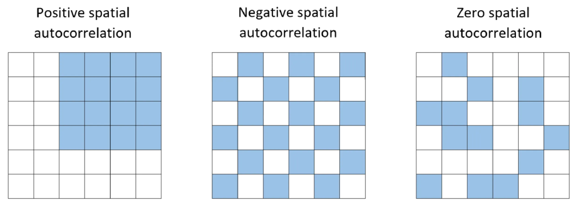
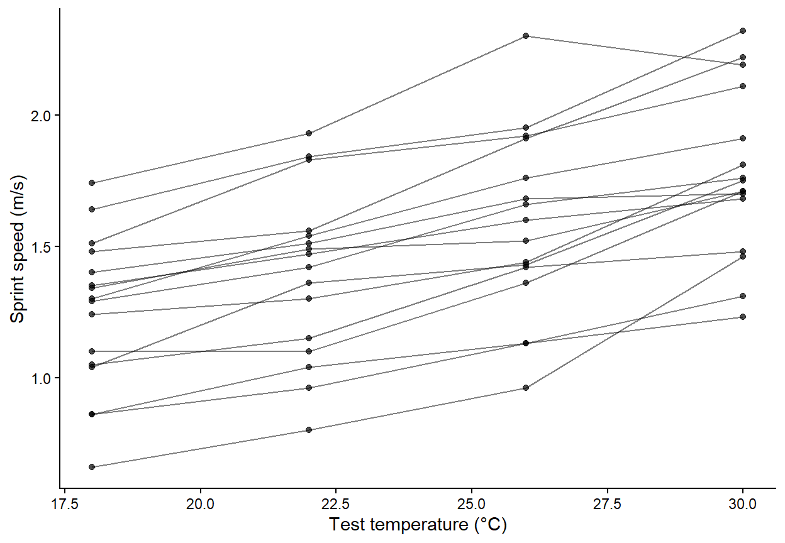
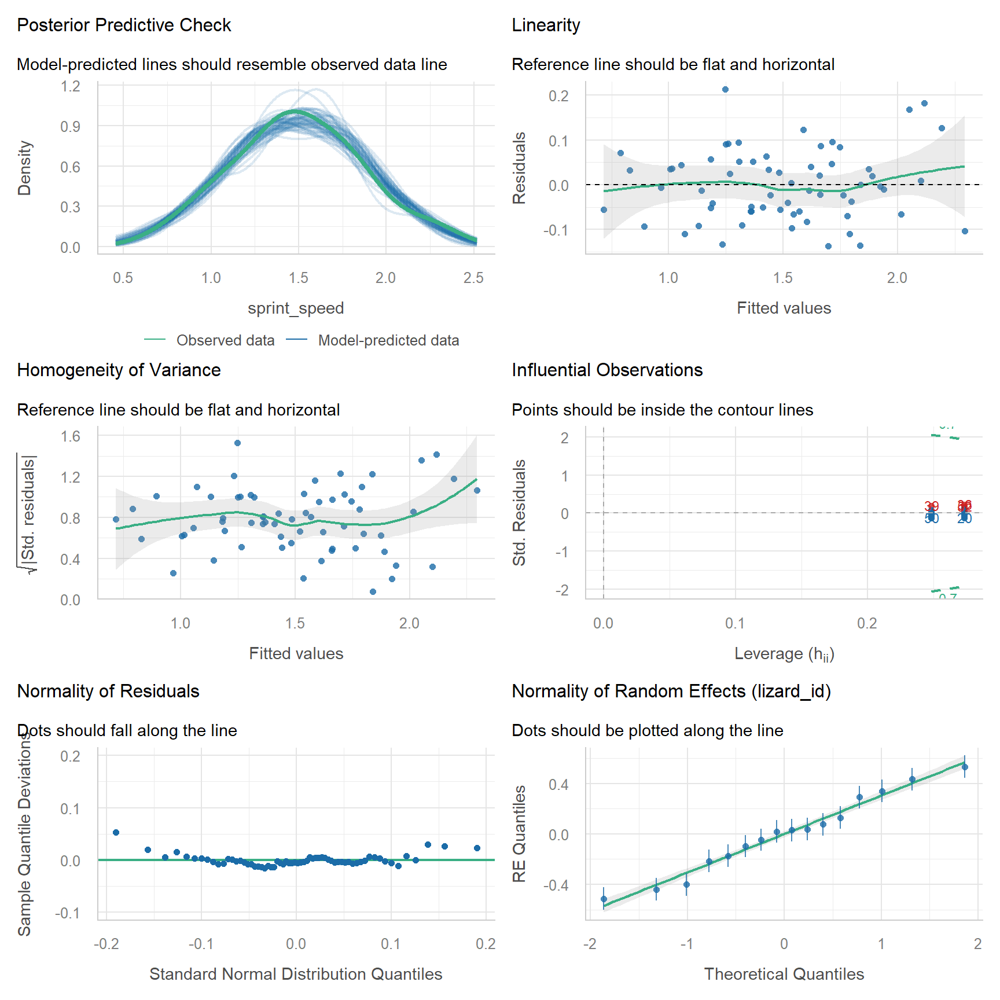
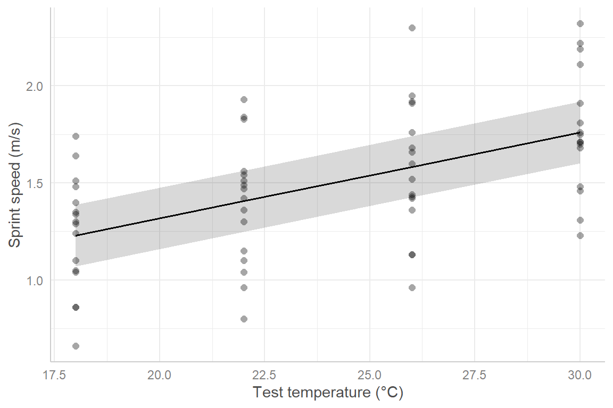

Week 12: Accounting for sites, repeated measurements and other sampling structure with random effects
So far, every model has assumed that each observation is independent. In real ecological studies that is rarely true (including your study): we measure the same animal more than once,take several quadrats from each site, or put several seedlings in each pot.
This week you will learn mixed-effects models, which add random effects to a linear model to account for this structure. Workshop materials are available in the GitHub repository ECS200.
TipLearning outcomes
By the end of this workshop you should be able to:
Recognise non-independent (grouped or repeated) data and explain why it matters.
Explain the difference between fixed and random effects.
Fit and check a random-intercept model with lmerTest::lmer().
Interpret the fixed effects and the variance components, and write up the results.
We need two new packages. lme4 fits mixed models, and lmerTest is a small add-on that gives lme4 models p-values.
Code
# Week 12 workshop - Mixed-effects models# Written by Nicholas Wu, 1234578, 13/05/2027# install.packages("lme4") # run once in the console if needed# install.packages("lmerTest")library(tidyverse) # data import, wrangling and plottinglibrary(lme4) # mixed-effects modelslibrary(lmerTest) # p-values for mixed-effects modelslibrary(performance) # checking model assumptionslibrary(see) # draws the plots for performancelibrary(ggeffects) # predictions from models for plotting# setwd("C:/Users/YOUR-NAME/Documents/ECS200")
Study context
In Week 5 every lizard was raced only once. That needs a lot of lizards. A more efficient design is to race the same lizard at several temperatures. Here, 16 dragons were each raced at 18, 22, 26 and 30 °C (in random order, with a rest day between trials), giving 64 sprint speeds.
Question: How does sprint speed change with temperature?
Some lizards are simply faster than others, at every temperature, perhaps because they are bigger or in better condition. The four measurements from the same lizard are therefore more similar to each other than to measurements from other lizards. They are not independent.
If we ignore this and fit lm(sprint_speed ~ temperature), R treats the data as 64 independent lizards. Treating repeated or grouped measurements as independent replicates is called pseudoreplication(Hurlbert, 1984). It is one of the most common mistakes in ecology, and it usually makes p-values too small.
Grouping structure appears everywhere:
Design
Grouping (random effect)
The same individual measured repeatedly
Individual ID
Several quadrats or traps within each site
Site
Several plants in each pot, tank or plot
Pot / tank / plot
Surveys repeated over several years
Year
Offspring from the same parents
Family
Another example is spatial autocorrelation, where sampling closer to each other may yield similar results because of similar soil composition (a problem you will see with The Island). Randomisation matters!

Neighbouring sites tend to be similar (positive spatial autocorrelation), which is another reason observations are not independent.
Fixed and random effects
A mixed-effects model contains both:
Fixed effects are the predictors your question is about (here, temperature). You estimate and report their coefficients, exactly as in Weeks 5–11.
Random effects describe the grouping structure (here, lizard ID). You are not interested in the difference between lizard L03 and lizard L11. You want to account for the fact that lizards differ.
The simplest random effect is a random intercept: each lizard gets its own baseline speed, and those baselines are assumed to come from a normal distribution with a standard deviation that the model estimates:
The model splits the unexplained variation into two parts: between lizards (\(\sigma^2_{\text{lizard}}\)) and within lizards (\(\sigma^2\), the residual).
In R the random intercept is written (1 | lizard_id), which reads “a separate intercept for each lizard”:
lmerTest::lmer(sprint_speed ~ temperature + (1| lizard_id), data = lizard_rm)
Use the app to compare a model that ignores lizard identity with one that has a random intercept for each lizard.
viewof re_between = Inputs.range([0,0.5], {value:0.25,step:0.01,label:"Differences between lizards (SD of baselines)"})viewof re_within = Inputs.range([0.02,0.4], {value:0.1,step:0.01,label:"Variation within a lizard (residual SD)"})viewof re_n = Inputs.range([3,20], {value:8,step:1,label:"Number of lizards"})viewof re_view = Inputs.radio(newMap([["Ignore lizard identity: one line, lm()","lm"], ["Random intercept for each lizard: lmer()","lmer"]]), {value:"lm",label:"Model"})viewof re_seed = Inputs.button("Resample")
Code
re_fit = {const r =rng(1212+ re_seed);const temps = [18,22,26,30];const u =rnorm(r, re_n,0, re_between);const pts = [];for (let j =0; j < re_n; j++) temps.forEach((t) => pts.push({id: j,x: t,y:0.4+0.045* t + u[j] +rnorm(r,1,0, re_within)[0]}));// pooled least squares (balanced design, so the slope equals the within-lizard slope)const xs = pts.map((d) => d.x), ys = pts.map((d) => d.y), N = pts.length;const mx =mean(xs), my =mean(ys);const sxx =sum(xs.map((v) => (v - mx) **2));const b1 =sum(pts.map((d) => (d.x- mx) * (d.y- my))) / sxx;const b0 = my - b1 * mx;const resid = pts.map((d) => d.y- b0 - b1 * d.x);const seNaive =Math.sqrt(sum(resid.map((e) => e * e)) / (N -2) / sxx);// lizard means of the residuals = estimated baselines before shrinkageconst raw =Array.from({length: re_n}, (_, j) =>mean(resid.filter((_, i) => pts[i].id=== j)));const within = resid.map((e, i) => e - raw[pts[i].id]);const s2 =sum(within.map((e) => e * e)) / (N - re_n -1);const su2 =Math.max(0,sum(raw.map((v) => v * v)) / (re_n -1) - s2 / temps.length);const shrink = su2 / (su2 + s2 / temps.length);const seMixed =Math.sqrt(s2 / sxx);const lines = raw.flatMap((v, j) => [18,30].map((t) => ({id: j,x: t,y: b0 + b1 * t + shrink * v})));return {pts, b0, b1, seNaive, seMixed, lines,icc: su2 / (su2 + s2)};}Plot.plot({width:560,height:300,marginLeft:50,x: {label:"Test temperature (°C)",domain: [17,31]},y: {label:"Sprint speed (m/s)",grid:true},color: {scheme:"tableau10"},marks: [ re_view ==="lmer"? Plot.line(re_fit.lines, {x:"x",y:"y",z:"id",stroke:"id",strokeOpacity:0.7,strokeWidth:1.5}) :null, Plot.dot(re_fit.pts, {x: (d) => d.x+ (d.id- re_n /2) *0.08,y:"y",fill: re_view ==="lmer"?"id": grey,r:3.5}), Plot.line([[17, re_fit.b0+ re_fit.b1*17], [31, re_fit.b0+ re_fit.b1*31]], {stroke: red,strokeWidth:3.5}) ]})
Code
html`<div class="app-verdict">Slope = <b>${fmt(re_fit.b1,3)}</b> m/s per °C in both models.Standard error of the slope: <b>${fmt(re_fit.seNaive,4)}</b> if lizard identity is ignored vs <b>${fmt(re_fit.seMixed,4)}</b> with a random intercept.Proportion of the unexplained variation due to differences between lizards (ICC) = <b>${fmt(re_fit.icc)}</b>.${re_view ==="lmer"?"Each coloured line is one lizard: same slope, its own baseline. The thick red line is the average lizard (the fixed effect).":"Lizard differences end up in the residuals, which makes the noise look larger than it is."}</div>`
Because every lizard was raced at every temperature, the random intercept removes the lizard-to-lizard differences from the noise, so the temperature effect is estimated more precisely (a smaller standard error). This is the same idea as a paired t-test. When the predictor only varies between groups (e.g. one latitude per marsh), it works the other way: ignoring the grouping makes you too confident. You will see that with the crab data at the end of this workshop.
How many groups do I need?
The model estimates the variation among groups from the groups you sampled, so it needs enough of them. A common guideline is at least 5 levels, and preferably more, for a random effect (Harrison et al., 2018). With only 2–3 sites, include site as a fixed effect instead.
2. Visualise
Plot each lizard as its own line (“spaghetti plot”). This shows the grouping structure immediately.
Code
ggplot2::ggplot(lizard_rm, ggplot2::aes(x = temperature, y = sprint_speed, group = lizard_id)) + ggplot2::geom_line(alpha =0.5) +# one line per lizard ggplot2::geom_point(alpha =0.7) + ggplot2::labs(x ="Test temperature (°C)", y ="Sprint speed (m/s)") + ggplot2::theme_classic()

Every lizard gets faster as temperature increases, the lines are roughly parallel (similar slopes), and some lizards are consistently faster than others (different heights). That is exactly the pattern a random intercept describes.
3. Check assumptions
A linear mixed model has the same assumptions as a linear model (linearity, equal variance and normal residuals) plus one more: the random effects are normally distributed. The independence assumption now only applies after accounting for the grouping.
Code
# Random intercept modellizard_lmm <- lmerTest::lmer(sprint_speed ~ temperature + (1| lizard_id),data = lizard_rm)performance::check_model(lizard_lmm)

Assumption
Panel
Here
Linearity
Linearity
✅ Flat reference line
Equal variance
Homogeneity of variance
✅
Normal residuals
Normality of residuals
✅
Normal random effects
Normality of random effects (lizard_id)
✅ Dots close to the line
Independence, given the grouping
Study design
✅ Lizards are different animals, tested in random order
WarningWhen do you need something different? (click to expand)
Situation
What to do
Groups differ in their slope as well as their intercept (the spaghetti lines are not parallel)
Add a random slope: (1 + temperature \| lizard_id). This needs plenty of data per group
Groups within groups, e.g. quadrats within sites within regions
Nested random effects: (1 \| region/site)
Two separate groupings, e.g. site and year
Crossed random effects: (1 \| site) + (1 \| year)
Counts or binary responses with grouping
Generalised linear mixed model: lme4::glmer(count ~ x + (1 \| site), family = poisson)
Fewer than about 5 groups
Fit the grouping as a fixed effect, e.g. lm(y ~ x + site)
Message boundary (singular) fit
The random effect variance is estimated as zero, often because there are too few groups or little variation among them. Check the data. The model may not need that random effect
Measurements close in time are more similar than distant ones
Temporal autocorrelation (see the optional Week 6 on time series)
4. Model
Code
summary(lizard_lmm)
Linear mixed model fit by REML. t-tests use Satterthwaite's method [
lmerModLmerTest]
Formula: sprint_speed ~ temperature + (1 | lizard_id)
Data: lizard_rm
REML criterion at convergence: -51.7
Scaled residuals:
Min 1Q Median 3Q Max
-1.50424 -0.64597 -0.05299 0.52411 2.32986
Random effects:
Groups Name Variance Std.Dev.
lizard_id (Intercept) 0.095692 0.30934
Residual 0.008365 0.09146
Number of obs: 64, groups: lizard_id, 16
Fixed effects:
Estimate Std. Error df t value Pr(>|t|)
(Intercept) 0.432250 0.099376 34.937588 4.35 0.000113 ***
temperature 0.044281 0.002556 47.000000 17.32 < 2e-16 ***
---
Signif. codes: 0 '***' 0.001 '**' 0.01 '*' 0.05 '.' 0.1 ' ' 1
Correlation of Fixed Effects:
(Intr)
temperature -0.617
The output gives everything you need:
Linear mixed model fit by REML: REML (restricted maximum likelihood) is the default fitting method. t-tests use Satterthwaite's method means lmerTest calculated the degrees of freedom and p-values.
Scaled residuals: a quick summary of the residuals. The median should be near 0 and the minimum and maximum roughly symmetrical.
Random effects: how the unexplained variation is split.
lizard_id (Intercept): the Variance and Std.Dev. of the baseline speeds between lizards. A large value means lizards differ a lot.
Residual: the variation within a lizard, left over after temperature and lizard identity.
Number of obs: 64, groups: lizard_id, 16: check these match your design (16 lizards × 4 temperatures).
Fixed effects: interpreted exactly like lm().
Estimate: (Intercept) is the predicted speed of the average lizard at 0 °C (outside the data, so not meaningful on its own). temperature is the change in sprint speed per °C for the average lizard.
Std. Error: the uncertainty in each estimate, now accounting for the repeated measures.
df: degrees of freedom from Satterthwaite’s method (usually a decimal).
t value and Pr(>|t|): the test statistic and p-value.
Correlation of Fixed Effects: how strongly the estimates are related to each other. You can usually ignore it.
Code
# 95% confidence intervals for the fixed effects (Wald method, fast and fine here)confint(lizard_lmm, parm ="beta_", method ="Wald")
2.5 % 97.5 %
(Intercept) 0.23747698 0.62702302
temperature 0.03927091 0.04929159
Code
# Intraclass correlation (ICC): proportion of the unexplained variance due to lizardsperformance::icc(lizard_lmm)
Compare this with the model that ignores lizard identity:
Code
lizard_lm <-lm(sprint_speed ~ temperature, data = lizard_rm)# Same slope, different standard errorsummary(lizard_lm)$coefficients["temperature", ]
Estimate Std. Error t value Pr(>|t|)
0.0442812500 0.0088815988 4.9857296120 0.0000052628
Code
summary(lizard_lmm)$coefficients["temperature", ]
Estimate Std. Error df t value Pr(>|t|)
4.428125e-02 2.556342e-03 4.700000e+01 1.732211e+01 4.883421e-22
Plot the predictions for the average lizard, with the raw data.
Code
lizard_pred <- ggeffects::predict_response(lizard_lmm, terms ="temperature")plot(lizard_pred, show_data =TRUE) + ggplot2::labs(title =NULL, x ="Test temperature (°C)", y ="Sprint speed (m/s)")

5. Interpret
Temperature: sprint speed increased by 0.044 m/s per °C (95% CI 0.039–0.049), i.e. about 0.53 m/s across the 12 °C range tested.
Random effects: lizards differed in their baseline speed with an SD of 0.31 m/s, while the residual SD within a lizard was 0.09 m/s. The ICC of 0.92 means 92% of the unexplained variation was due to consistent differences between individual lizards.
R2: temperature alone explains 0.28 of the variation (marginal R2), and temperature plus lizard identity explain 0.94 (conditional R2).
Methods sentence: Because each lizard was tested at all four temperatures, the effect of temperature on sprint speed was analysed with a linear mixed-effects model with temperature as a fixed effect and lizard identity as a random intercept, fitted with lme4 and lmerTest in R (p-values from Satterthwaite’s degrees of freedom). Significance was set with α = 0.05.
Results sentence:
Sprint speed increased with temperature by 0.044 m/s per °C (95% CI 0.039–0.049; t47 = 17.3, p < 0.001; Fig. 1). Individual lizards differed consistently in speed (SD among lizards = 0.31 m/s; ICC = 0.92).
Revisiting Week 7: crabs in marshes
Atlantic marsh fiddler crab (Minuca pugnax).
In Week 7 we regressed fiddler crab size on latitude using 392 crabs, but they came from only 13 marshes, and every crab in a marsh has the same latitude. The predictor varies only between marshes, so the real replication for the latitude effect is closer to 13 than to 392. A random intercept for marsh (site) fixes this.
Code
crab_data <- readr::read_csv("data/pie_crab.csv")# Week 7 model: treats 392 crabs as independentcrab_lm <-lm(size ~ latitude, data = crab_data)# Mixed model: crabs are grouped within marshescrab_lmm <- lmerTest::lmer(size ~ latitude + (1| site), data = crab_data)# Compare the latitude estimate and its standard errorsummary(crab_lm)$coefficients["latitude", ]
Estimate Std. Error t value Pr(>|t|)
4.851191e-01 3.359292e-02 1.444111e+01 3.602897e-38
Code
summary(crab_lmm)$coefficients["latitude", ]
Estimate Std. Error df t value Pr(>|t|)
4.888768e-01 7.964087e-02 1.105760e+01 6.138517e+00 7.163163e-05
The slope barely changes, but its standard error increases from 0.034 to 0.08 and the degrees of freedom drop from 390 to about 11, which is close to the number of marshes. The evidence for Bergmann’s rule is still strong (p < 0.001), but the mixed model gives an honest measure of the uncertainty. With a weaker effect, the simple lm() could easily have produced a “significant” result that the data did not support.
Picasso triggerfish swimming over seagrass meadow at Green Island. Photo: Dieter Tracey 2020.
Seagrass shoot length and water depth. Seagrasses need light, and light decreases with depth. To test whether seagrass shoots are shorter in deeper water, divers sampled 8 seagrass meadows. In each meadow they placed 12 quadrats at different depths and measured the mean shoot length (cm) in each quadrat.
Import the data and check its structure. Which variable is the grouping (random) effect, and why should it be random rather than ignored?
Plot shoot length against depth, with a different colour (or line) for each meadow. Describe the pattern within meadows and among meadows.
Fit a linear model that ignores meadow (lm()), and a mixed model with a random intercept for meadow (lmerTest::lmer()).
Check the assumptions of the mixed model with performance::check_model().
Report the depth effect (estimate, 95% CI, p-value) from the mixed model. How do the estimate and its standard error differ from the lm()?
Report the among-meadow SD, the residual SD and the ICC. What do they tell you?
Plot the predicted shoot length against depth with ggeffects::predict_response().
Write a results sentence.
For next year’s survey, the team can afford about 100 quadrats. Would you recommend 5 meadows × 20 quadrats or 20 meadows × 5 quadrats if the aim is to make conclusions about seagrass meadows in general? Explain in one or two sentences.
NoteHow your assessment is marked
Submit one R script (.R) before the end of the class. Write your answers to written questions as # comments next to the code that produced them.
Score
What it looks like
0
No submission or no attempt.
0.25
Submitted, but a very poor attempt (e.g. incomplete, or lots of gaps).
0.5
Most questions answered, or all answered but most annotations missing.
0.75
All questions answered, but some annotations missing or some answers incorrect.
1
Everything completed, with annotations on all code so the marker can follow it.
Tip: an annotation is a short # comment that says what the line does and why. For example: # remove the one plant with a stem dry mass of 7.4 g (data entry error).
Harrison et al. (2018)A brief introduction to mixed effects modelling and multi-model inference in ecology: the go-to practical guide (focus on sections 1–4).
Hurlbert (1984)Pseudoreplication and the design of ecological field experiments: the classic paper that defined pseudoreplication.
Pedersen et al. (2019)Hierarchical generalized additive models in ecology: what to do when relationships are wiggly as well as grouped (advanced).